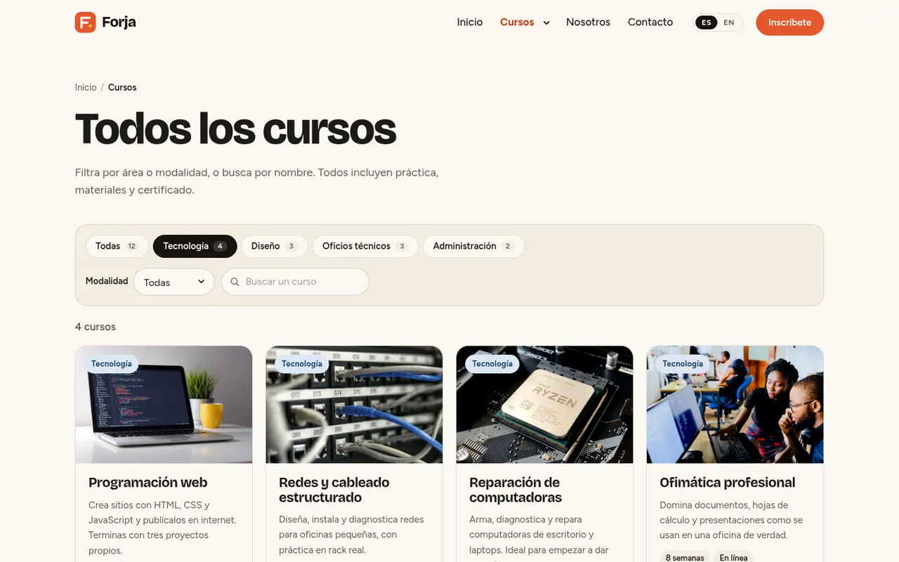
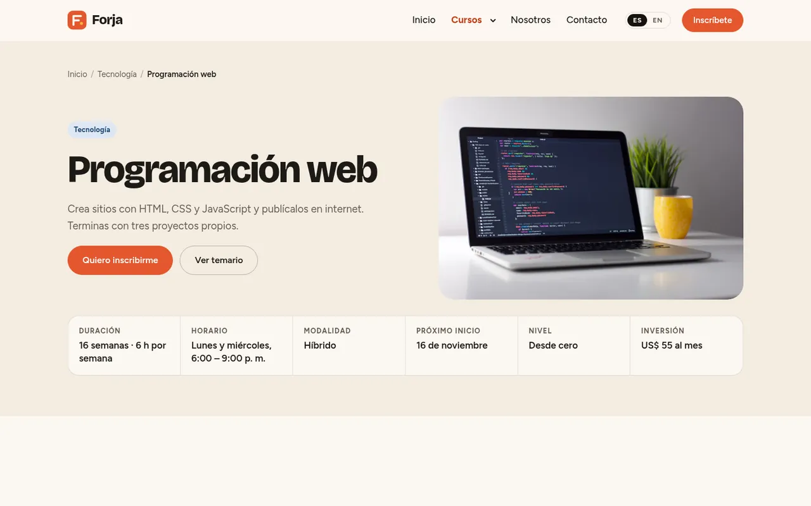
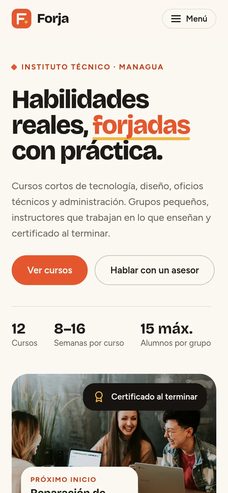
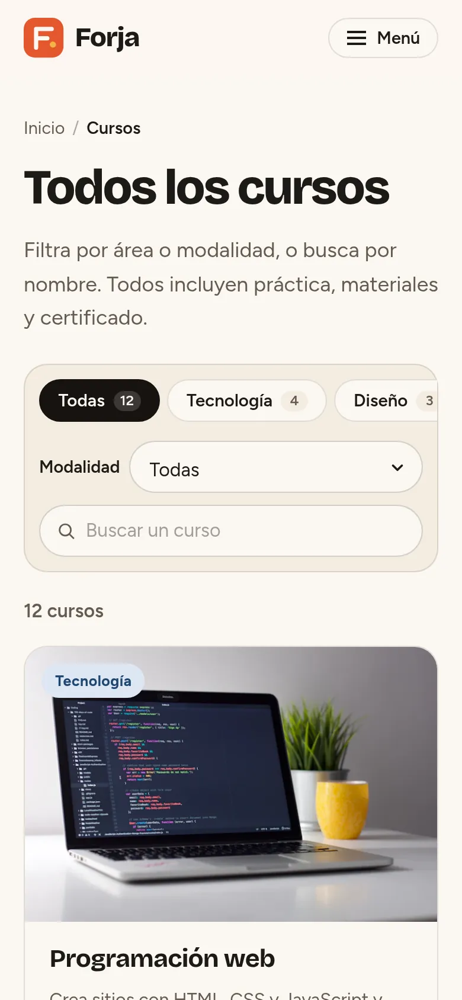
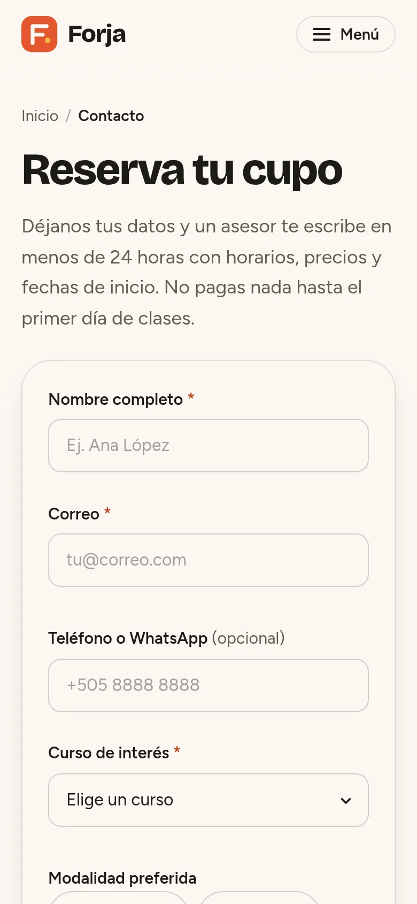

Objetivo
Mostrar cómo construyo un sitio con catálogo, como los que se arman con Webflow CMS y Finsweet: que el visitante encuentre un curso en segundos y que agregar uno nuevo no obligue a tocar el HTML.
Mi rol
- Definí la arquitectura y escribí el contenido de los 12 cursos, en español e inglés.
- Diseñé la interfaz y el sistema de componentes en CSS.
- Programé el catálogo, las páginas de detalle, el formulario de inscripción y el cambio de idioma.
- Hice el QA en escritorio, tablet y móvil, con teclado y con movimiento reducido.
Arquitectura
Cuatro páginas y una fuente de datos. Un módulo de JavaScript cumple el papel de una colección CMS: cada curso tiene título, resumen, área, modalidad, precio, fechas, temario, requisitos e instructor, en los dos idiomas.
- Inicio: propuesta, áreas y cursos próximos.
- Catálogo: los 12 cursos con filtros por área, modalidad y búsqueda.
- Detalle: una sola plantilla (
curso.html?c=slug) para todos los cursos, como una plantilla CMS de Webflow. - Inscripción: formulario con el curso preseleccionado desde el detalle.
Desafío
Finsweet Attributes está pensado para Webflow: espera el runtime de Webflow y lee las tarjetas una sola vez al iniciar. En Forja las tarjetas se generan con JavaScript y se vuelven a generar al cambiar de idioma, así que el filtro se quedaba con tarjetas que ya no existían.
Solución
- Cargo el script de Finsweet solo después del primer render y simulo
Webflow.pushpara que arranque sin el runtime de Webflow. - Al cambiar de idioma reconstruyo las tarjetas y reinicio el módulo List con
restart(), así el contador y los filtros siguen correctos. - Cada tarjeta lleva campos ocultos (
fs-list-field) con área, modalidad y palabras clave sin tildes, para que «electronica» encuentre «electrónica». - Los filtros se reflejan en la URL (
?area_equal=tecnologia): la miga de pan del detalle abre el catálogo ya filtrado.
Inscripción y responsive
El formulario valida cada campo al salir de él, asocia los errores a su campo y lleva el foco al primer error. Es una demo: no envía datos. En móvil, el menú se abre y cierra con teclado (Escape) y las tarjetas pasan de cuatro columnas a una.





Resultado
- 12 cursos en 4 áreas, filtrables por área, modalidad y texto, con contador de resultados y estado vacío.
- Sitio bilingüe; el idioma elegido se comparte con este portafolio.
- Animaciones con GSAP que respetan la preferencia de movimiento reducido.
Fotos: Unsplash. Librerías: Finsweet Attributes v2 y GSAP. Diseño, código y textos: Luis Selva.